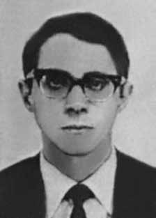

João
Antônio
Santos
Abi
Eçab
CIRCUNSTÂNCIAS DA MORTE
João Antonio Santos Abi Eçab morreu no dia 8 de novembro de 1968, em um acidente automobilístico na rodovia BR 116, Km 69, na altura da cidade de Vassouras, Rio de Janeiro, quando seu carro colidiu contra a traseira de um caminhão. Sua esposa, Catarina Helena Abi Eçab, que encontrava-se com ele no veículo, também faleceu.
De acordo com testemunhas, João Antonio foi retirado do carro ainda com vida e morreu logo em seguida. O episódio que resultou na morte do casal ainda não foi plenamente esclarecido. A versão oficial, divulgada à época dos fatos, sustentava que o casal teria morrido em um acidente de carro. No veículo, teriam sido encontrados uma metralhadora, munição, dinheiro, livros e documentos pessoais das vítimas.
Consta no boletim de ocorrência que “foi dado ciência à Polícia às 20 horas de 8/11/68. Três policias se dirigiram ao local constatando que na altura do km 69 da BR-116, o VW 349884-SP dirigido por seu proprietário João Antonio dos Santos Abi Eçab, tendo como passageira sua esposa Catarina Helena Xavier Pereira (nome de solteira), havia colidido com a traseira do caminhão de marca De Soto, placa 431152-RJ, dirigido por Geraldo Dias da Silva, que não foi encontrado. O casal de ocupantes do VW faleceu no local. Após os exames de praxe, os cadáveres foram encaminhados ao necrotério local”.
A versão noticiada pela imprensa afirmava ainda que o acidente teria se dado durante viagem de lua de mel do casal. As investigações empreendidas assinalaram, contudo, a existência de uma série de indícios que apontam a improcedência da versão oficial, segundo a qual a morte do casal teria ocorrido sem a participação de agentes do Estado.
No dia 20 de novembro de 1968, o jornal Última Hora divulgou trechos do depoimento de testemunhas do acidente que colocavam em cheque a versão dos órgãos estatais. Em matéria intitulada “Marighella: Polícia procura casal de estudantes” uma testemunha, que manteve sigilo de sua identidade, revelou que o carro do casal estava sendo perseguido na estrada antes de colidir. Nos dias seguintes, o mesmo jornal publicou “Esta confusa história da metralhadora”. O texto que segue à manchete traz o depoimento do investigador da Delegacia de Vassouras, segundo o qual seria muito difícil um acidente ocorrer naquela altura da rodovia, uma vez que se tratava de um percurso reto de quatros quilômetros.
Outra testemunha ouvida pelo jornal, Júlio Hofgeker, além de reiterar a impossibilidade de acidente naquele trecho da estrada, relatou ter observado várias balas de revólver pelo chão. Júlio, que era constantemente chamado para auxiliar a polícia fotografando acidentes e outras ocorrências, foi impedido, na ocasião, de registrar fotograficamente as sacolas supostamente encontradas com o casal no local do acidente. Posteriormente, em abril de 2001, denúncias feitas pelo jornalista Caco Barcellos levantaram a hipótese de que Catarina e João teriam sido executados com tiros na cabeça. O jornalista entrevistara o ex-soldado, Waldemar Martins de Oliveira, que relatou ter visto o casal ser levado para um imóvel em São João do Meriti, pertencente a um oficial, onde teriam sido torturados e executados.
Segundo essa versão, o acidente não passaria de uma farsa para esconder a prática de tortura a qual Catarina e João Antonio teriam sido submetidos. Com base nesse relato, a família de Catarina concordou em exumar seus restos mortais. O laudo da exumação, elaborado pela Polícia Técnico Científica de São Paulo, contradisse a versão oficial e concluiu que sua morte foi consequência de “traumatismo crânio-encefálico” causado por “ação vulnerante de projétil de arma de fogo”.
Mais recentemente, em depoimento perante a CNV e a Comissão Rubens Paiva, Waldemar Martins de Oliveira afirmou que teriam participado da ação a equipe de Fred Perdigão e de outro agente chamado Miro, a quem não atribui identificação exata. A CEMDP, ao analisar o caso, no ano de 2005, concluiu que ambas as versões – a que sustenta que o acidente teria sido causado por perseguição ao veículo; e a que afirma que o acidente teria sido forjado para encobrir a prisão, tortura e execução do casal – eram verossímeis e indicavam que a morte de João Antonio e Catarina tinha ocorrido por ação de agentes do Estado brasileiro.
Belizardo dos Santos Jr, relator do caso na CEMDP, em testemunho dado à CNV e à Comissão da Verdade do estado de São Paulo Rubens Paiva, destacou que à época a polícia política foi a primeira a chegar ao local do acidente. Afirmou ainda que não houve perícia de local e nem mesmo laudo necroscópico. Frente a esses fatos, levantou a possiblidade de que as armas encontradas no carro tenham sido, na verdade, ‘plantadas’ no local para justificar a morte dos militantes e afastar a suspeita de participação do Estado no óbito.
Em 2014, a CNV elaborou um Laudo Pericial Indireto sobre o caso. As conclusões apontaram para a veracidade do acidente, ainda que não seja possível precisar com exatidão se houve perseguição ao carro. Apesar da colisão de fato ter ocorrido, o laudo pericial afirma, baseado no laudo de exumação anterior, que Catarina, que ocupava o banco passageiro, veio a óbito por conta de um projétil de arma de fogo, com o qual foi alvejada. Não foi possível, porém, aferir o momento da ocorrência do tiro ou de onde foi disparado.
O corpo de João Antonio, por sua vez, que guiava o carro no momento do acidente, não passou por exumação e perícia. Segundo a análise feita pelo Núcleo de Perícia da CNV, a partir dos documentos produzidos à época, o corpo de João apresentava lesões típicas de uma vítima que sofreu acidente de carro, como as “diversas lesões contundentes, impregnadas de sangue” nas “regiões frontal, orbital e nasal”. Para além desses fatos, as marcas de frenagem desenhadas no asfalto pelo Volkswagen ocupado pelo casal também indica a ocorrência da colisão, a qual tentou-se evitar acionando o sistema de freios.
O laudo concluiu que a causa de morte de João Antonio foi a colisão, ainda que não seja possível apontar para interferências externas que possam ter influenciado o acidente. Tal conclusão deriva da constatação de que a vítima “apresentava lesões produzidas quando em vida, resultantes daquelas típicas de colisão entre veículos”. Cabe ressaltar que, de acordo com o referido laudo pericial, as condições em que o casal viajava era ideal. O trecho onde ocorreu o acidente era reto (cerca de quatro quilômetros), asfaltado, possuía mão dupla, pista “delimitada por acostamento seguido de margens composta de vegetação rasteira”, estava seca no momento da batida e “sem quaisquer irregularidades ou deformações”.
Soma-se às condições da pista apresentadas no laudo o fato de os automóveis também estarem em perfeito estado: “os freios funcionavam de forma satisfatória, haja vista que foi constatada duas marcas pneumáticas de frenagem, de coloração escuro, retilínea”. A análise questiona, portanto, a ocorrência de um acidente comum e abre a possibilidade de interpretações que levem em consideração a participação do estado na ação, na tentativa de eliminar os militantes. Os restos mortais de João Antonio Santos Abi Eçab foram enterrados no Cemitério do Araçá, em São Paulo.
João Antonio Santos Abi Eçab died on November 8, 1968, in a car accident on the BR 116 highway, Km 69, near the city of Vassouras, Rio de Janeiro, when his car collided with the back of a truck. His wife, Catarina Helena Abi Eçab, who was with him in the vehicle, also died.
According to witnesses, João Antonio was removed from the car while still alive and died shortly afterwards. The episode that resulted in the couple's death has not yet been fully clarified. The official version, released at the time of the events, stated that the couple had died in a car accident. A machine gun, ammunition, money, books and personal documents belonging to the victims were found in the vehicle.
The incident report states that "the Police were notified at 8 pm on 11/8/68. Three police officers went to the scene and found that at km 69 of the BR-116, the VW 349884-SP driven by its owner João Antonio dos Santos Abi Eçab, with his wife Catarina Helena Xavier Pereira (maiden name) as a passenger, had collided with the rear of the De Soto truck, license plate 431152-RJ, driven by Geraldo Dias da Silva, which was not found. The couple of occupants of the VW died at the scene. After the usual examinations, the bodies were sent to the local morgue.”
The version reported by the press also stated that the accident had occurred during the couple's honeymoon trip. The investigations undertaken highlighted, however, the existence of a series of signs that point to the unfoundedness of the official version, according to which the couple's death would have occurred without the participation of State agents.
On November 20, 1968, the newspaper Última Hora published excerpts from the testimony of witnesses to the accident that called into question the version of state bodies. In an article entitled “Marighella: Police looking for student couple”, a witness, who kept his identity confidential, revealed that the couple's car was being chased on the road before colliding. In the following days, the same newspaper published “This confusing story of the machine gun”. The text that follows the headline contains the testimony of the investigator from the Vassouras Police Station, according to whom it would be very difficult for an accident to occur at that height on the highway, since it was a straight route of four kilometers.
Another witness interviewed by the newspaper, Júlio Hofgeker, in addition to reiterating the impossibility of an accident on that stretch of road, reported having observed several revolver bullets on the ground. Júlio, who was constantly called to assist the police by photographing accidents and other events, was prevented, at the time, from photographing the bags supposedly found with the couple at the scene of the accident. Later, in April 2001, reports made by journalist Caco Barcellos raised the hypothesis that Catarina and João had been executed with shots to the head. The journalist interviewed the former soldier, Waldemar Martins de Oliveira, who reported having seen the couple being taken to a property in São João do Meriti, belonging to an officer, where they were allegedly tortured and executed.
According to this version, the accident was nothing more than a hoax to hide the torture to which Catarina and João Antonio were subjected. Based on this report, Catarina's family agreed to exhume her remains. The exhumation report, prepared by the Technical Scientific Police of São Paulo, contradicted the official version and concluded that his death was the result of “traumatic brain injury” caused by “the vulnerating action of a firearm projectile”.
More recently, in testimony before the CNV and the Rubens Paiva Commission, Waldemar Martins de Oliveira stated that Fred Perdigão's team and another agent called Miro, to whom he does not attribute exact identification, had participated in the action. CEMDP, when analyzing the case in 2005, concluded that both versions – the one that maintains that the accident was caused by pursuit of the vehicle; and the one that states that the accident had been faked to cover up the arrest, torture and execution of the couple – were credible and indicated that the deaths of João Antonio and Catarina had occurred due to the actions of agents of the Brazilian State.
Belizardo dos Santos Jr, rapporteur of the case at CEMDP, in testimony given to the CNV and the Truth Commission of the state of São Paulo Rubens Paiva, highlighted that at the time the political police were the first to arrive at the scene of the accident. He also stated that there was no site inspection or even an autopsy report. In view of these facts, he raised the possibility that the weapons found in the car had, in fact, been 'planted' at the location to justify the death of the militants and eliminate the suspicion of State participation in the death.
In 2014, the CNV prepared an Indirect Expert Report on the case. The conclusions pointed to the veracity of the accident, although it is not possible to determine exactly whether there was a pursuit of the car. Although the collision actually occurred, the expert report states, based on the previous exhumation report, that Catarina, who occupied the passenger seat, died due to a firearm projectile, with which she was shot. However, it was not possible to determine when the shot occurred or where it was fired from.
The body of João Antonio, in turn, who was driving the car at the time of the accident, did not undergo exhumation and forensic examination. According to the analysis carried out by the CNV Expertise Center, based on documents produced at the time, João's body showed injuries typical of a victim who suffered a car accident, such as “several blunt injuries, impregnated with blood” in the “frontal, orbital and nasal regions”. In addition to these facts, the braking marks drawn on the asphalt by the Volkswagen occupied by the couple also indicate the occurrence of the collision, which was attempted to be avoided by activating the braking system.
The report concluded that João Antonio's cause of death was the collision, although it is not possible to point to external interference that may have influenced the accident. This conclusion derives from the finding that the victim “presented injuries caused while alive, resulting from those typical of collisions between vehicles”. It is worth noting that, according to the aforementioned expert report, the conditions in which the couple traveled were ideal. The stretch where the accident occurred was straight (about four kilometers), paved, had two lanes, a lane “delimited by a shoulder followed by banks made up of undergrowth”, was dry at the time of the crash and “without any irregularities or deformations”.
In addition to the track conditions presented in the report, the cars were also in perfect condition: “the brakes worked satisfactorily, given that two pneumatic braking marks were found, dark in color, straight”. The analysis therefore questions the occurrence of a common accident and opens the possibility of interpretations that take into account the state's participation in the action, in an attempt to eliminate the militants. The mortal remains of João Antonio Santos Abi Eçab were buried in the Araçá Cemetery, in São Paulo.
João Antonio Santos Abi Eçab murió el 8 de noviembre de 1968, en un accidente automovilístico en la carretera BR 116, km 69, cerca de la ciudad de Vassouras, Río de Janeiro, cuando su automóvil chocó con la parte trasera de un camión. También murió su esposa, Catarina Helena Abi Eçab, que lo acompañaba en el vehículo.
Según testigos, João Antonio fue sacado del coche en vida y murió poco después. El episodio que provocó la muerte de la pareja aún no ha sido completamente esclarecido. La versión oficial, difundida en el momento de los hechos, afirmaba que la pareja había fallecido en un accidente automovilístico. En el vehículo se encontró una ametralladora, municiones, dinero, libros y documentos personales de las víctimas.
El informe del incidente precisa que "la Policía fue notificada a las 20 horas del día 8/11/68. Tres policías acudieron al lugar y comprobaron que en el km 69 de la BR-116, el VW 349884-SP conducido por su propietario João Antonio dos Santos Abi Eçab, con su esposa Catarina Helena Xavier Pereira (apellido de soltera) como pasajera, había chocado con la parte trasera del camión De Soto, matrícula 431152-RJ, conducido por Geraldo Dias da Silva, que no fue encontrado. La pareja de ocupantes del VW falleció en el lugar, luego de los exámenes habituales, los cadáveres fueron enviados a la morgue local”.
La versión recogida por la prensa también indicó que el accidente había ocurrido durante el viaje de luna de miel de la pareja. Las investigaciones realizadas pusieron de relieve, sin embargo, la existencia de una serie de indicios que apuntan a la infundación de la versión oficial, según la cual la muerte de la pareja se habría producido sin la participación de agentes del Estado.
El 20 de noviembre de 1968, el diario Última Hora publicó extractos de los testimonios de testigos del accidente que pusieron en duda la versión de los organismos estatales. En un artículo titulado “Marighella: La policía busca a una pareja de estudiantes”, un testigo, que mantuvo su identidad en reserva, reveló que el coche de la pareja fue perseguido en la carretera antes de chocar. En los días siguientes, el mismo periódico publicó “Esta confusa historia de la ametralladora”. El texto que sigue al titular contiene el testimonio del investigador de la comisaría de Vassouras, según el cual sería muy difícil que se produjera un accidente a esa altura de la carretera, ya que se trataba de un recorrido recto de cuatro kilómetros.
Otro testigo entrevistado por el diario, Júlio Hofgeker, además de reiterar la imposibilidad de accidente en ese tramo de la vía, relató haber observado varias balas de revólver en el suelo. A Júlio, que era llamado constantemente para ayudar a la policía fotografiando accidentes y otros acontecimientos, se le impidió, en ese momento, fotografiar las bolsas supuestamente encontradas con la pareja en el lugar del accidente. Posteriormente, en abril de 2001, informes del periodista Caco Barcellos plantearon la hipótesis de que Catarina y João habían sido ejecutados con disparos en la cabeza. El periodista entrevistó al exsoldado Waldemar Martins de Oliveira, quien relató haber visto cómo llevaban a la pareja a una propiedad en São João do Meriti, propiedad de un oficial, donde presuntamente fueron torturados y ejecutados.
Según esta versión, el accidente no fue más que un engaño para ocultar las torturas a las que fueron sometidos Catarina y João Antonio. Con base en este informe, la familia de Catarina acordó exhumar sus restos. El informe de exhumación, elaborado por la Policía Científica Técnica de São Paulo, contradijo la versión oficial y concluyó que su muerte fue consecuencia de un “lesión cerebral traumática” provocada por “la acción vulnerante de un proyectil de arma de fuego”.
Más recientemente, en declaraciones ante la CNV y la Comisión Rubens Paiva, Waldemar Martins de Oliveira afirmó que en la acción participaron el equipo de Fred Perdigão y otro agente llamado Miro, a quien no atribuye identificación exacta. El CEMDP, al analizar el caso en 2005, concluyó que ambas versiones –la que sostiene que el accidente fue provocado por la persecución del vehículo; y el que afirma que el accidente había sido simulado para encubrir el arresto, tortura y ejecución de la pareja- eran creíbles e indicaban que las muertes de João Antonio y Catarina habían ocurrido por la actuación de agentes del Estado brasileño.
Belizardo dos Santos Jr, relator del caso en el CEMDP, en testimonio rendido ante la CNV y la Comisión de la Verdad del estado de São Paulo, Rubens Paiva, destacó que en ese momento la policía política fue la primera en llegar al lugar del accidente. También afirmó que no hubo inspección del lugar ni siquiera informe de autopsia. Ante estos hechos, planteó la posibilidad de que las armas encontradas en el automóvil hubieran sido efectivamente "colocadas" en el lugar para justificar la muerte de los militantes y eliminar la sospecha de participación del Estado en la muerte.
En 2014, la CNV elaboró un Peritaje Indirecto sobre el caso. Las conclusiones apuntaron a la veracidad del accidente, aunque no se puede determinar con exactitud si hubo persecución del coche. Aunque la colisión efectivamente ocurrió, el informe pericial señala, con base en el informe de exhumación anterior, que Catarina, que ocupaba el asiento del pasajero, murió a causa de un proyectil de arma de fuego, con el que recibió un disparo. Sin embargo, no fue posible determinar cuándo se produjo el disparo ni desde dónde fue realizado.
El cuerpo de João Antonio, por su parte, que conducía el coche en el momento del accidente, no fue sometido a exhumación ni examen forense. Según el análisis realizado por el Centro de Expertos de la CNV, a partir de documentos elaborados en la época, el cuerpo de João presentaba lesiones propias de una víctima de un accidente automovilístico, como “varias heridas contundentes, impregnadas de sangre” en las “regiones frontal, orbitaria y nasal”. Además de estos hechos, las marcas de frenada dibujadas en el asfalto por el Volkswagen que ocupaba el matrimonio también indican la aparición de la colisión, que se intentó evitar activando el sistema de frenos.
El informe concluyó que la causa de la muerte de João Antonio fue la colisión, aunque no es posible señalar interferencias externas que puedan haber influido en el accidente. Esta conclusión se deriva de la constatación de que la víctima “presentaba lesiones producidas en vida, derivadas de las propias de colisiones entre vehículos”. Cabe señalar que, según el citado peritaje, las condiciones en las que viajaba la pareja eran ideales. El tramo donde se produjo el accidente era recto (unos cuatro kilómetros), asfaltado, tenía dos carriles, un carril "delimitado por un arcén seguido de taludes formados por maleza", se encontraba seco en el momento del choque y "sin irregularidades ni deformaciones".
Además de las condiciones de la pista presentadas en el informe, los coches también se encontraban en perfecto estado: “los frenos funcionaron satisfactoriamente, ya que se encontraron dos marcas de frenado neumático, de color oscuro, rectas”. El análisis cuestiona, por tanto, la ocurrencia de un accidente común y abre la posibilidad de interpretaciones que tengan en cuenta la participación del Estado en la acción, en un intento de eliminar a los militantes. Los restos mortales de João Antonio Santos Abi Eçab fueron enterrados en el Cementerio de Araçá, en São Paulo.